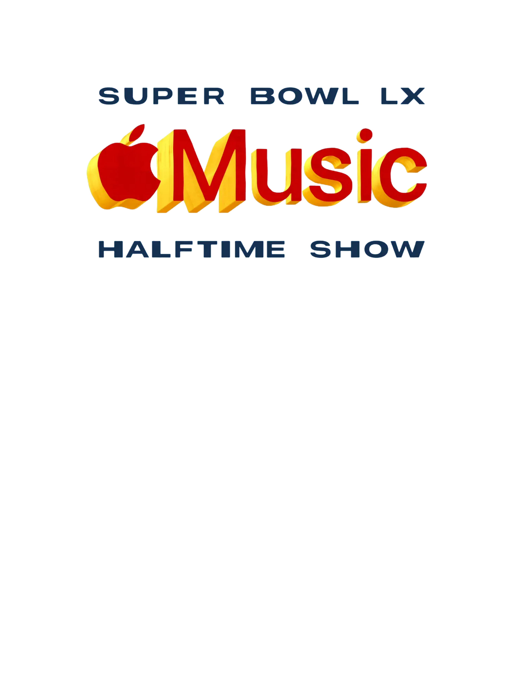

Sponsor: Lay's
U.S. TV Audience: 133.4 million
Considered the first major global pop spectacle.
DCDA Semester Project
A case study by Abby Hanlon
The history of the Super Bowl Halftime Show is defined by a long-standing battle over whether it is “a break from the action” or “the main attraction,” depending on whom you ask. In the lens of communicators, the Super Bowl Halftime Show is a heavily anticipated event: featuring strategic marketing campaigns, partnerships, and global superstars at the forefront of the 50-yard line. Since the 90s, the Super Bowl Halftime Show has hosted some of the biggest names in music through strategic partnerships with major, globally recognized brands, driving year-over-year viewership worldwide.
A brief look at how the Super Bowl Halftime Show evolved from a televised performance into a global marketing platform.
Sponsor: Lay's
U.S. TV Audience: 133.4 million
Considered the first major global pop spectacle.
Sponsor: E*Trade
U.S. TV Audience: 82.9 million
Notable for its emotional 9/11 tribute.
Sponsor: Bridgestone
U.S. TV Audience: 114 million
Marked a major rise in sponsorship value and event visibility.
Sponsor: Pepsi
U.S. TV Audience: 118.5 million
One of the highest U.S. TV audiences of the pre-streaming era.
Sponsor: Pepsi
U.S. TV Audience: 117.5 million
Helped signal the show’s growing digital and social media influence.
Sponsor: Apple Music
Audience: 121 million
Massive viral impact and major search interest around Fenty Beauty.
Sponsor: Apple Music
International TV Reach: 62.5 million
Reached peak international audiences in Mexico and Canada.
Sponsor: Apple Music
U.S. Live Viewers: 133.5 million
Global Views: 3.65 billion
Most-watched live halftime show in history, with major global digital reach.
Sponsor: Apple Music
U.S. Audience: 128 million
Global Views: 4.157 billion in first 24 hours
Peak global integration, with more than 55% of views coming from outside the U.S.
The sponsorship shift
(Nielsen, 2026)
Hypothesis
Three mini case studies that show how Apple’s brand identity evolved through media, storytelling, and music.
Section 01
For 50 years, Apple has been universally recognized as “the greatest product company in history” (Jason Aten, Inc., 2026) and as one that learns from itself, its audiences, and the way the world evolves and adapts to new technology every day.
Section 02
Apple is globally recognized as a leader in marketing because it doesn’t just advertise products – it communicates ideas that resonate culturally.
Section 03
Those same standards of authenticity are represented and celebrated even more boldly through Apple’s sub-brand: Apple Music.

Pre-Show Rollout
Through teaser content, platform integration, curated playlists, and exclusive digital experiences, Apple Music turned halftime into something audiences could enter long before kickoff.
The Announcement
Apple Music Halftime Rollout
Through playlists, product integrations, app features, and social storytelling, Apple Music expanded Bad Bunny’s halftime show into a digital experience audiences could enter from anywhere.
Playlist Strategy
Apple Music translated Bad Bunny’s sound into mood, genre, and identity, creating multiple cultural entry points that felt personal, yet universally understood.
Sad Bunny. Trap Bunny. Dance Bunny. Party Bunny. Each playlist met listeners in a different emotional state, allowing audiences from all backgrounds to connect with his music in a way that felt familiar and accessible.
Playlist Strategy
Bunny & Friends expanded that reach even further, highlighting collaborations and features to showcase Bad Bunny across genres and alongside other artists.
The DNA of DtMF went deeper. By curating Latin and Puerto Rican sounds that inspired his 2025 album, Apple Music didn’t just promote the project — it educated a global audience on the cultural roots behind it.
Playlist Strategy
The 2026 Super Bowl LX Megamix (DJ Mix), curated and produced by Tainy, traced the full arc of Bad Bunny’s evolution.
By blending iconic hits and deeper cuts into one cohesive listening experience, Apple turned pre-show promotion into cultural storytelling.
Apple Product Integration
Apple extended the halftime show beyond the screen, embedding it across its ecosystem to create a shared experience across digital and physical spaces.
In Apple Stores, fans stepped into the moment through Bad Bunny-themed displays and Today at Apple Spatial Audio sessions for CAFé CON RON, paired with a three-month Apple Music offer.
Apple Product Integration
Through Apple Maps, the “Let’s Eat” guide curated by local food journalist Luke Tsai connected the Super Bowl host city to the broader event narrative.
Through Apple Sports, fans could check updates, scoring, and live reports, blending halftime anticipation with Apple’s growing sports ecosystem.
App + Feature Integration
Apple transformed passive consumption into something interactive, social, and personal.
With Apple Music Sing, fans could engage with Bad Bunny’s music through adjustable vocals, real-time lyrics, and translations — making the experience more accessible across languages.
App + Feature Integration
Apple Invites brought people together through custom Bad Bunny visuals, collaborative playlists, shared photo albums, and an at-a-glance countdown widget.
On Shazam, users could identify Bad Bunny songs to unlock exclusive halftime content, including custom wallpapers, bonus assets, reminders, and post-show highlights.
Social Media Rollout
Apple executed a phased content strategy that turned anticipation into sustained momentum.
On September 28, 2025, Apple introduced Bad Bunny as the headliner across YouTube, Instagram, and TikTok, planting the first seed of cultural conversation.
Social Media Rollout
By January 15 and 16, 2026, first-look trailers, teaser content, and visual storytelling gave audiences a glimpse into the performance without revealing everything.
On February 1 and February 4, guest speculation, creator-style videos, and DJ integrations invited fans into the conversation.
Social Media Rollout
On February 5, 2026, Apple released an official Bad Bunny interview exclusively on Apple Music for subscribers, only three days before the performance.
By February 8, the day of the show, posts highlighting collaborators, in-person energy, and behind-the-scenes moments unified fans across platforms.
U.S. audience
Global social and digital views
Views from outside the U.S.
Add your campaign-within-a-campaign analysis here. Explain how Apple extended the halftime show beyond the live event through digital storytelling, video, social media, and platform integration.
Add your research methodology here. Include your qualitative research, quantitative research, and AI disclosure if you used AI tools to organize, write, design, or code the project.
Add your final takeaway here. Connect your findings back to your research question and hypothesis.